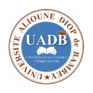

<div class="page">
    <div class="page-main">
      <!-- Navbar-->
      <app-header></app-header>
  
      <app-nav [inputFromParent] = "inputText"></app-nav>
  
      <div class=" app-content my-3 my-md-5">
        <div class="side-app">
          <br/>
        </div>

    <div class="container justify-content-center">
        <div class="col-md-10">
            <div class="card mb-3">
            <div id="pdfTable" #pdfTable>
                <div class=" justify-content-center">
                    <br>
                    
                </div>
                <div style="text-align:'center';font-weight: bold;font-family: 'Times New Roman';" >
                    UNIVERSITE ALIOUNE DIOP DE BAMBEY<br/>
                        <i> L'excellence est ma constance, l'éthique ma vertu</i>
                       ____________________________________________________________________________________
                </div>  
                <div style="text-align: center;font-family: 'Times New Roman';font-weight: bold;">
                    UFR SATIC - Département TIC<br/>
                    Master Professionnel SI/SR<br/>
                        ****************<br/>
                <h3><u> DEMANDE D'AUTORISATION DE SOUTENANCE</u></h3><br/>
                </div> 
                <div style="text-align:left;margin-left: 7%;font-family: 'Times New Roman';">
                    A Monsieur le Directeur de l'UFR SATIC, UADB<br/><br>
                    Monsieur Le Directeur,<br/>
                    Par cette présente, je viens solliciter auprès de vous une autorisation pour soutenir mon
                    mémoire de master 2.<br/><br>
                    Je suis étudiant en Master 2, Option <strong style="font-weight: bold;"> {{classe}}</strong>, j'ai validé tous les crédits du
                    Master 1<br> et du Master 2, et la commission des PFE du département de TIC m'a notifié que mon
                    mémoire est soutenable.<br><br> Dans l'attente d'une suite favorable à ma demande, je vous prie de bien
                    vouloir agréer, Monsieur le Directeur,<br> mes salutation les plus repectueuses.<br/><br/><br/>
                </div>
                <div style="text-align: right; margin-right: 15%;font-weight: bold;font-family: 'Times New Roman';">
                  {{etudiant.compte.prenom}} {{etudiant.compte.nom}} <br><br><br><br>
                </div>
                <div style="text-align: left; margin-left: 7%;">
                    Fait à Bambey le <strong  style="font-weight: bold;">{{date}} </strong><br><br><br><br>
                </div>
                <div style="text-align: center; font-size: small;font-family: 'Times New Roman';">
                    UNIVERSITE ALIOUNE DIOP DE BAMBEY<br/>
         Tel:(+221)33 973 30 84 - Fax:(+221)33 973 30 93 - B.P:30 <br/>
          Site: www.uadb.edu.sn - Email: satic@uadb.edu.sn<br><br>
                </div>
                
           
            </div>
        </div>
        <button class="btn btn-primary" (click)="downloadAsPDF();">Génèrer le PDF</button><br><br>
      </div>
</div>
       

</div>
<!--footer-->
<app-footer></app-footer>
<!-- End Footer-->
</div>
</div>
